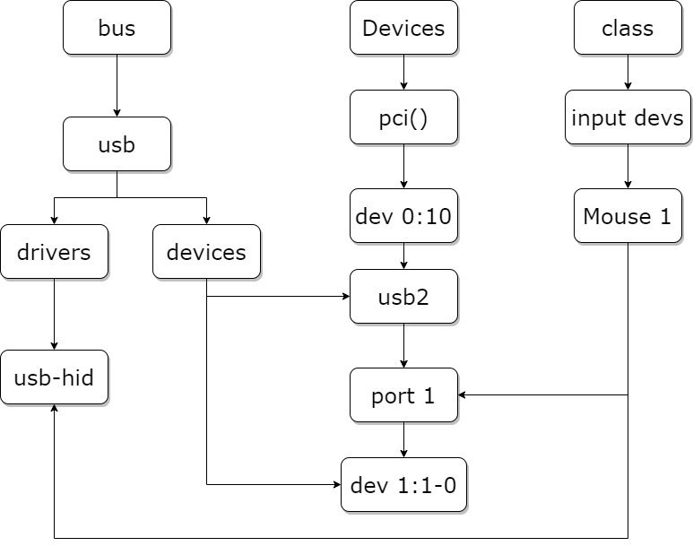
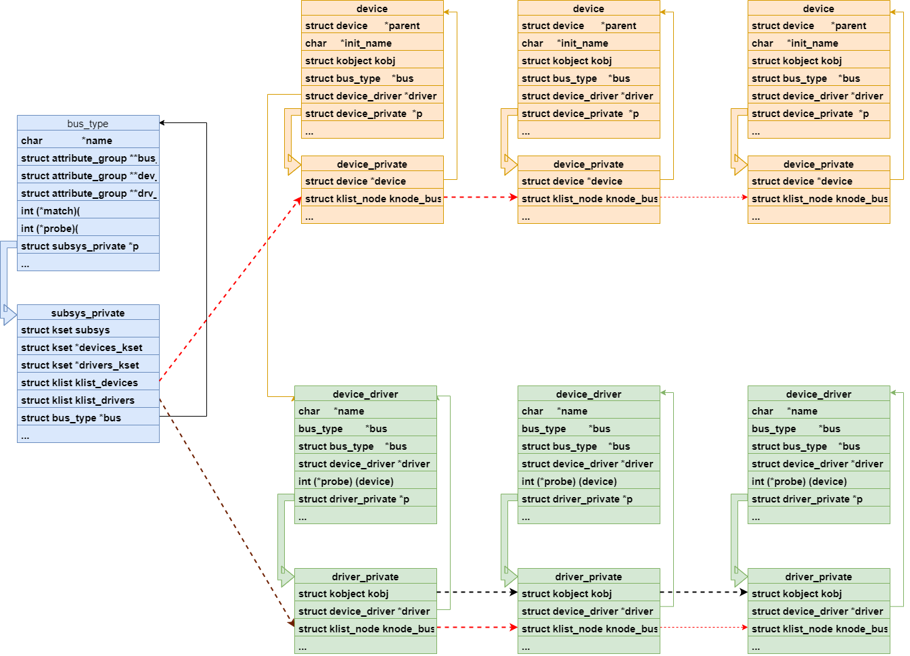

3.3. sysfs、udev以及它们背后的linux统一设备模型¶
3.3.1. sysfs¶
sysfs是一个基于内存的虚拟的文件系统，有kernel提供，挂载到/sys目录下，负责以设备树的形式向user space提供直观的设备和驱动信息。
sysfs以不同的视角展示当前系统接入的设备：
/sys/block 历史遗留问题，存放块设备，提供一设备名(如sda)到/sys/devices的符号链接
/sys/bus 按总线类型分类，在某个总线目录之下可以找到链接该总线的设备的符号链接，指向/sys/devices. 某个总线目录之下的drivers目录 包含了该总线所需的所有驱动的符号链接。对应卡尔呢了中的struct bus_type
/sys/calss 按设备功能分类，如输入设备在/sys/class/input之下，图形设备在/sys/class/graphics之下，是指向/sys/devices的符号链接。 对应kernel中的struct class
/sys/dev 按设备驱动程序分层(字符设备 块设备)，提供以major:minor为名到/sys/devices的符号链接。 对应Kernel中的struct device_driver
/sys/devices 包含所有被发现的注册在各种总线上的各种物理设备。 所有物理设备都按其在总线上的拓扑结构来显示，除了platform devices和system devices。 platform devices 一般是挂载在芯片内部高速或者低速总线上的各种控制器和外设，能被CPU直接寻址。 system devices不是外设，而是芯片内部的核心结构，比如CPU，timer等。对应kernel中的strcut device
/sys/firmware 提供对固件的查询和操作接口(关于固件有专用于固件加载的一套api)
/sys/fs 描述当前加载的文件系统，提供文件系统和文件系统已挂载的设备信息。
/sys/kernel 提供kernel所有可调整参数，但大多数可调整参数依然存放在sysctl(/proc/sys/kernel)
/sys/module 所有加载模块(包括内联、编译进kernel、外部的模块)信息，按模块类型分类。
/sys/power 电源选项，可用于控制整个机器的电源状态，如写入控制命令进行关机、重启等。
sysfs支持多视角查看，通过符号链接，同样的信息可出现在多个目录下。
以硬盘sda为例，既可以在块设备目录/sys/block下找到，又可以在/sys/devices/pci0000:00/0000:00:10.0/host32/target32:0:0/下找到
3.3.2. 统一设备模型¶
sysfs的功能基于linux的统一设备模型，其由以下结构组成：
3.3.2.1. kobject¶
统一设备模型中最基本的对象
kobject
struct kobject{
const char *name; //名称，将在sysfs中作为文件名
struct list_head entry; //加入kset链表的结构
struct kobject *parent; //父节点指针，构成树状结构
struct kset *kset; //指向所属的kset
struct kobj_type *ktype; //类型
struct kernfs_node *sd; //指向所属(sysfs)目录项
struct kref kref; //引用计数
unsigned int state_initialized:1; //是否已经初始化
unsigned int state_in_sysfs:1; //是否已经在sysfs中显示
unsigned int state_add_uevent_sent:1; //是否已经向user space发送add uevent
unsigned int state_remove_uevent_sent:1;
unsigned int uevent_suppress:1; //是否忽略上报
};
其中 kobj_type结构如下
struct kobj_type{
void (*release)(struct kobject *kobj); //析构函数，kobject的引用计数为0时调用
const struct sysfs_ops *sysfs_ops; //操作函数，当用户读取sysfs属性时调用show(),写入sysfs属性时调用store()
struct attribute **default_attrs; //默认属性，体现为该kobject目录下的文件
const struct kobject_ns_type_operations *(*child_ns_type)(struct kobject *kobj); //namespace 操作函数
const void *(*namespace)(struct kobject *kobj);
};
实际上这里实现的类似与对kobject的派生，包含不同kobj_type的kobject可以看作不同的子类。通过实现相同的函数来实现多态。 每一个kobject的数据结构(如kset、device、device_driver等)，都要实现自己的kobj_type，并实现其中的函数。
kobj_type的定义会如实的在sysfs中反映，其中的属性attribute会以attribute.name为文件名在该目录下创建文件，对该文件进行读写会调用 sysfs_ops 中定义的show()和store()
kset
kobject的容器，维护了其包含的kobject链表，链表的最后一项指向kset.kobj，用于表示某一类型的kobject
struct kset{
struct list_head list; //kobject链表头
spinlock_t list_lock; //自旋锁，保障操作安全
struct kobject kobj; //自身的kobject
const struct kset_uevent_ops *uevent_ops; //uevent 操作函数集。
};
注意和kobj_type的关联，kobject会利用成员kset找到自己所属的kset，设置自身的ktype为kset.kobj.ktype。当没有指定的kset成员时，才会用ktype来建立关系。
此外，kobject调用的是它所属的kset的uevent操作函数来发送uevent，如果kobject不属于任何kset，则无法发送uevent
device/driver/bus/class
linux设备模型的更上一层的表述是device/driver/bus/class。他们都定义在include/linux/device.h中
/sys/bus 目录下的每个子目录都是注册好了的总线类型，每个子目录下包含两个子目录(devices和driver文件夹)。其中devices下是该总线类型下的所有设备， 这些设备都是符号链接，指向/sys/devices。
/sys/devices 目录是是全局设备结构体系，包含所有被发现的注册在总线上的各种物理设备。
/sys/class 目录则是包含所有注册在kernel中的设备类型。
下图是一个usb设备的设备去驱动拓扑图
在总线上管理着两个链表，分别管理着设备和驱动，当我们向系统注册一个驱动时，便会向驱动的管理链表插入我们的新驱动，同样当我们向系统注册一个设备时，便会
向设备的管理链表插入我们的新设备。在插入的同时总线会执行一个 bus_type 结构体中的 match 方法对新插入的设备/驱动进行匹配。匹配成功后会调用
device_driver结构体中probe方法，移除驱动或者设备时调用device_driver结构体中的remove方法。
device
device描述了一项设备，对应数据结构device
struct device{
struct device *parent;
struct device_private *p;
strcut kobject kobj;
const char *init_name;
const struct device_type *type;
struct mutex mutex;
struct bus_type *bus;
struct device_driver *driver;
struct class *class;
};
init_name:指定设备名字
parent:表示该设备的父对象
bus:表示该设备挂载在哪条总线，当我们注册设备时，内核便会将该设备注册到对应的总线。
driver:表示该设备对应的驱动
可以使用以下函数注册和注销设备
int device_register(struct device *dev);
void device_unregister(struct device *dev);
其中维护了类型为device_private的指针p
struct device_private{
struct klist list_children;
struct klist_node knode_parent;
struct klist_node knode_driver;
struct klist_node knode_bus;
struct list_head deferred_probe;
struct device *device;
};
klist_node 用来作为所属driver链表，所属bus链表中的节点。
设备通过device_register来注册到系统中，通过device_unregister来从系统中卸载。
driver
设备依赖于driver来进行驱动，对应的数据结构为device_driver
struct device_driver{
const char *name;
struct bus_type *bus;
strcut module *owner;
const char *mod_name;
bool suppress_bind_attrs;
enum probe_type probe_type;
const strcut of_device_id *of_match_table;
const struct acpi_device_id *acpi_match_table;
int(*probe)(strcut device *dev);
int(*remove)(struct device *dev);
void (*shutdown)(struct device *dev);
int(*suspend)(struct device *dev, pm_message_t state);
int(*resume)(struct device *dev);
const struct attribute_group **groups;
const struct dev_pm_ops *pm;
struct driver_private *p;
};
name:指定驱动名称
bus:表示驱动依赖于哪个总线
suppress_bind_attrs:用于指定是否通过sysfs导出bind与unbind文件，bind和unbind文件时驱动用于绑定/解绑关联的设备。
of_match_table:指定驱动支持的设备类型，当内核使能设备树时，会利用该成员与设备树中的
compatible属性进行比较probe:驱动与设备匹配后会执行该回调函数。
groups:表示驱动的属性
其中维护了类型为driver_private的指针p
struct driver_private{
struct kobject kobj;
struct klist klist_device;
struct klist_node knode_bus;
struct module_kobject *mkobj;
struct device_driver *driver;
};
其维护了dirver自身的私有属性，比如由于他也是kobject的子类，因此包含了kobj。可通过driver_cteate_file/ dirver_remove_file来增删属性，属性将直接作用于p->kobj.
bus
设备总是挂载在某一条总线上的，对应的数据结构为bus_type
struct bus_type{
const char *name;
const char *dev_name;
struct device *dev_root;
struct device_attribute *dev_attrs;
const struct attribute_group **bus_groups;
const struct attribute_group **dev_groups;
const struct attribute_group **drv_groups;
int (*match)(struct device *dev, struct device_driver *drv);
int (*uevent)(struct device *dev, struct kobj_uvent_env *env);
int (*probe)(struct device *dev);
int (*remove)(struct device *dev);
void (*shutdown)(struct device *dev);
int (*online)(struct device *dev);
int (*offline)(struct device *dev);
int (*suspend)(struct device *dev,pm_message_t state);
int (*resume)(struct device *dev);
struct subsys_private *p;
struct lock_class_key lock_key;
};
name:指定总线名称，会在/sys/bus目录下创建一个新的目录，目录名称就是该参数的值
bus_groups,dev_groups,drv_groups:分别表示总线、设备、驱动的属性。这些属性可以时内部变量、字符串等等，
match:当向总线注册一个新的设备或者新的驱动时，会调用该回调函数。
uevent:当总线上的设备发生添加、移除就会调用该函数。
probe:设备和驱动匹配后会调用该函数。
p:该结构它用于存放特定的私有数据，其成员klist_devices和klist_drivers记录了挂载在该总线上的设备和驱动。
通过以下函数注册和注销bus
int bus_register(struct bus_type *bus);
void bus_ungister(struct bus_type *bus);
其中维护了类型为subsys_private的指针P
struct subsys_private{
struct kset subsys;
struct kset *devices_kset;
struct list_head interface;
struct mutex mutex;
struct kset *drivers_kset;
struct klist klist_devices;
struct klist klist_drivers;
struct blocking_nottifier_head bus_notifier;
unsigned int drivers_autoprober:1;
struct bus_type *bus;
struct kset glue_dirs;
struct class *class;
};
它维护了bus自身的私有属性，它维护了挂载在该总线上的设备集合device_kset和与该总线相关的驱动程序集合drivers_kset
对应到sysfs中，每个bus_type对象对应/sys/bus目录下的一个子目录，子目录下必有devices和dirver文件夹，里面存放指向设备和驱动的符号链接。
下图是总线上关联设备和驱动之后的数据结构关系图：
class
class对应一种设备分类，对应的数据结构为class
struct class{
const char *name;
struct module *owner;
struct class_attribute *class_attrs;
const struct attribute_group **dev_grpoups;
struct kobject *dev_kobj;
int (*dev_uevent)(struct device *dev,struct kobj_uvent_env *env);
char *(*devnode)(struct device *dev, umode_t *mode);
void (*class_release)(struct class *class);
void (*dev_release)(struct device *dev);
int (*suspend)(struct device *dev,pm_message_t state);
int (*resume)(struct device *dev);
int (*shutdown)(struct device *dev);
const struct kobj_ns_type_operation *ns_type;
const void *(*namespace)(struct device *dev);
const struct dev_pm_ops *pm;
struct subsys_private *p;
};
class 只是一种抽象的概念，用于描述接口相似的一类设备。
小结
device driver bus class四者之间存在着这样的关系：
driver用于驱动device，其保存了所有能够被它所驱动的设备链表。
bus是连接CPU和device的桥梁，其保存了所有挂载在它上面的设备链表和驱动这些设备的驱动链表。
class用于描述一类device，其保存了所有该类device的设备链表。
attribute
用于定义设备模型中的各项属性，基本属性有两种，分别为普通属性attribute和二进制属性bin_attribute
struct attribute{
const char *name;
umode_t mode;
#ifdef CONFIG_DEBUG_LOCK_ALLOC
bool ignore_lockdep:1;
struct lock_class_key *key;
struct lock_class_ket skey;
#endif
};
struct bin_attribute{
struct attribute attr;
size_t size;
void *private;
ssize_t (*read)(struct file *,struct kobject *,struct bin_attribute *,char *, loff_t , size_t);
ssize_t (*write)(struct file *,struct kobject *,struct bin_attribute *,char *, loff_t ,size_t);
int (*mmap)(struct file *,struct kobject *,struct bin_attribute *attr, struct vm_area_struct *vma);
};
使用attribute生成的sysfs文件，只能用字符串的形式读写，而struct bin_attribute在attribute的基础上，增加了read、write函数，因此 它生成的sysfs文件可以用任何方式读写。
attribute_gpoup
顾名思义就是属性组，将一组属性打包成一个对象，其包含了以attribute和bin_attribute指针数组。
struct attribute_group{
const char *name;
umode_t (*is_visible)(struct kobject *,struct attribute *,int);
umode_t (*is_bin_visible)(struct kobject *, struct bin_attribute *, int);
struct attribute **attrs;
struct bin_attribute **bin_attrs;
};
sysfs 映射
sysfs本质上是对统一设备模型中的各结构的映射。换句话说sysfs本质上就是通过vfs接口去读写kobject的层次结构后动态建立的内存文件系统。
int __init sysfs_init(void)
{
int err;
sysfs_root = kernfs_create_root(NULL, KERNFS_ROOT_EXTRA_OPEN_PERM_CHEACK, NULL);
if(IS_ERR(sysfs_root))
return PTR_ERR(sysfs_root);
sysfs_root_kn = sysfs_root->kn;
err = register_filesystem(&sysfs_fs_type);
if(err)
{
kernfs_destroy_root(sysfs_root);
return err;
}
return 0;
}
sysfs_init通过kernfs_create_root创建新的kernfs层级，然后将其保存在静态全局变量中，供各处使用，然后通过register_filesystem将其注册到名 为sysfs的文件系统中。
目录映射
kobject 在sysfs中对应的是目录(dir)
当我们注册一个kobject时，会调用kobject_add 于是
kobject_add===>kobject_add_varg===>kobject_add_internal===>create_dir====>sysfs_create_dir_ns
如果kobj有parent，则它的父节点为kobj->parent->sd
属性映射
属性在sysfs中对应的是文件(file)
当需要为设备添加属性时，可以调用device_create_file，于是
deivice_create_file===>sysfs_create_file===>sysfs_create_file_ns====>sysfs_add_file_mode_ns===>__kernfs_create_file
创建的文件大小即为存放该属性值的长度，对于普通属性来说，大小为 PAGE_SIZE(4K)，而对于二进制属性来说，大小由属性自定义，即 bin_attribute.size 指定。
当用户对属性文件进行读写时，会调用绑定的读写函数，比如对于 mode 为 SYSFS_PREALLOC 且 kobj->ktype->sysfs_ops 定义了 show 和 store 函数的属性， 绑定是 sysfs_prealloc_kfops_rw 。这里的 kobj 指的是该属性的父节点，也就是属性所属设备的 kobj。
于是在读文件时，调用 sysfs_kf_read ，它会根据属性文件找到其父节点类型对应的 sysfs_ops ，然后调用 sysfs_ops.show 。show 需要将输出写到传入的 buf 缓冲区中， 并返回写入的长度。
在写文件时，调用 sysfs_kf_write ，它会根据属性文件找到其父节点类型对应的 sysfs_ops ，然后调用 sysfs_ops.store 。 store 可以从传入的 buf 缓冲区中， 读取用户写入的长度为 len 的内容。
但是需要注意的是， sysfs_ops 中的 show 和 store 函数并非是读写我们属性所需要的 show 和 store 。因为一个设备只有一个类型，因此 sysfs_ops 打扰 show 和 store 只有一种实现，但实际上 show 和 store 应该根据属性的不同而不同。怎么办呢？绕个弯子：在调用 sysfs_ops.show 和 sysfs_ops.store 时传入属性 attribute 的指针， 然后在函数中将指针转换为设备类型对应属性的指针后调用属性的 show 和 store 函数。这也就是 device_attribute 、 class_attribute 或一些设备自定义属性 (比如 cpuidle_driver_attr) 中定义有 show 和 store 函数的原因。
3.3.3. uedev¶
udev完全工作在用户空间，当一个设备被插入或者移除时，内核会通过netlink套接字发送设备详细信息到用户空间，udev获取到设备信息，根据信息内容在/dev下创建并命名设备节点。
冷插拔的设备怎么办
由于冷插拔的设备在开机时就已经存在，在udev启动前已经被插入，针对这种情况，sysfs的设备都存在 uevent 文件，向该文件写入 add ，内核会重新发送netlink，之后udev就可以
受到设备的详细信息了，从而创建/dev下对应的设备节点。
3.3.3.1. udev规则¶
配置文件
udev的配置文件位于/etc/udev/和/lib/udev
udev的主配置文件是/etc/udev/udev.conf，它包含一套变量，允许用户修改udev默认值，可以设置的变量如下：
udev_root 设备目录，默认是/dev
udev_log 日志等级(表示严重程度)，跟syslog一致，例如err,info,debug
规则文件
udev的规则文件一般位于/lib/udev/rules.d/，也可以位于/etc/udev/rules.d/
规则文件是按照字母顺序处理的，对于相同名字的规则文件，/etc/udev/rules.d比/lib/udev/rules.d优先
规则文件必须以.rules作为扩展名，否则不被当作规则文件。
规则文件的每一行哦第时key=vaule的格式，key有两种类型，1) 匹配型key 2) 赋值型key
当所有匹配型key都匹配时，该规则即被采用，赋值型key就会获得相应的值。
一条规则有多个key=value组成，以英文逗号个凯，每个key有一个操作，取决于操作符，有效的操作符如下：
== 比较是否相等
!= 比较是否不想等
= 给一个key赋值，表示一个列表的key会被重置，并且把这个唯一的值传给它
+= 将一个值增加到key中
:= 将一个值传给一个key，并且不允许再修改这个key
匹配型key
下面的key可以匹配设备属性，部分key也可以用于匹配sysfs中父设备属性，不仅仅是产生事件的那个设备。如果在一个规则中，有多个key 匹配了一个父设备，则这些key必须匹配同一个父设备。
key |
description |
|---|---|
ACTION |
匹配事件的动作名 |
DEVPATH |
匹配事件的设备devpath |
KERNEL |
匹配事件的设备名 |
NAME |
匹配网络接口或者设备节点名字，NAME只有在前面的规则中赋值之后才可以使用 |
SYMLINK |
匹配设备节点的符号连接名字，只有在赋值之后才可以使用 |
SUBSYSTEM |
匹配设备子系统 |
DRIVER |
匹配设备的驱动名，只对绑定到一个驱动的设备有用 |
ATTR{filename} |
匹配事件设备的sysfs属性 |
KERNELS |
向上搜索devpath，知道找到一个匹配的设备名 |
SUBSYSTEMS |
… |
DRIVERS |
… |
ATTRS{filename} |
… |
ENV{key} |
环境变量取值 |
TAG |
设备的TAG |
TEST{ } |
测试一个文件是否存在 |
PROGRAM |
执行一个程序，如果程序成功返回，key为true，可以从RESULT把这个key读取 |
RESULT |
匹配最近一次PROGRAM调用的返回字符串，应该在PROGRAM之后使用 |
支持一些shell的通配符
代表0到无穷多个任意字符
? 代表【一定有一个】任意字符
[] 代表一定有一个在括号内的字符
赋值型KEY
key |
description |
|---|---|
NAME |
根据这个规则创建的设备文件的文件名 |
SYMLINK |
|
OWNER |
设备文件的属组 |
GROUP |
设备文件所在的组 |
MODE |
设备文件的权限，采用8进制 |
ATTR{key} |
|
TAG |
|
RUN |
为设备而执行的程序列表 |
LABEL |
GOTO 可以跳到的地方 |
GOTO |
跳到下一个带有匹配名字的LABEL处 |
IMPORT |
导入一个文件或者一个程序执行后而生成的规则集到当前文件 |
WAIT_FOR |
等待一个特定的设备文件的创建，主要是用作时序和依赖问题 |
OPTIONS |
特定选项：last_rule对这类设备终端规则执行。ignore_divice忽略当前规则 |
NAME、SYMLINK、PROGRAM、OWNER、GROUP、MODE、RUN这些filed支持一个简单的，类似于printf函数的格式字符串替换，可以的字符串替换如下；
$kernel,%k :该设备在内核中的名字(%k替换$kernel)
$number,%n :该设备的内核号码，例如sda1的内核号码是1
$devpath,%p :该设备的devpath
$id,%b :向上搜索devpath，寻找SUBSYSTEMS，KERNELS，DRIVERS和ATTRS时，被匹配的设备名字
$driver :…被匹配的驱动名字
$attr{file}, %s{file} :一个被发现的设备的sysfs属性的值，如果该设备没有该属性，且前面的KERNELS ，SUBSYSTEMS，DRIVERS或ATTRS测试选择的是一个父设备，那么就用父设备的属性，如果属性是一个符号链，符号链的最后一个元素作为返回值。
$env{key},%E{key} :一个设备的属性值
$major,%M :主设备号
$minor,%m :次设备号
$result,%c :由PROGRAM调用的外部程序返回的字符串，如果这个字符串包含空格，可以用%c{N}选中第N个字段。如果这个数字N后面有一个+字符，则表示选中这个字段开始的后面所有字符
$parent,%p :父设备的节点名字
$name :设备节点的名字，用一个空格作为分割符，该值只有在前面的规则赋值之后才存在
$links :当前符号链的列表，用空格隔开
$root,%r :udev_root的值
$sys,%S :sysfs挂载点
$tempmpde,%N :在真正的设备节点创建之前，创建的一个临时设备节点的名字，这个临时节点供外部程序使用。
查询设备信息
例如：设备sda的SYSFS{size}可以通过cat /sys/block/sda/size得到。SYSFS{model}信息可以通过cat /sys/block/sda/device/model得到
或者可以通过udevadm命令获取设备信息
root@ArkV3:/dev# udevadm info --query=all --name=/dev/mmcblk0
P: /devices/platform/interconnect@100000/4f80000.sdhci/mmc_host/mmc0/mmc0:0001/block/mmcblk0
N: mmcblk0
S: disk/by-id/mmc-S0J57X_0x11bc20a7
S: disk/by-path/platform-4f80000.sdhci
E: DEVLINKS=/dev/disk/by-id/mmc-S0J57X_0x11bc20a7 /dev/disk/by-path/platform-4f80000.sdhci
E: DEVNAME=/dev/mmcblk0
E: DEVPATH=/devices/platform/interconnect@100000/4f80000.sdhci/mmc_host/mmc0/mmc0:0001/block/mmcblk0
E: DEVTYPE=disk
E: ID_NAME=S0J57X
E: ID_PART_TABLE_TYPE=dos
E: ID_PART_TABLE_UUID=19c5099c
E: ID_PATH=platform-4f80000.sdhci
E: ID_PATH_TAG=platform-4f80000_sdhci
E: ID_SERIAL=0x11bc20a7
E: MAJOR=179
E: MINOR=0
E: SUBSYSTEM=block
E: TAGS=:systemd:
E: USEC_INITIALIZED=2619079
调试
以下内容为通过udevadm monitor监测SD卡的拔出以及插入事件
root@ArkV3:~# udevadm monitor
monitor will print the received events for:
UDEV - the event which udev sends out after rule processing
KERNEL - the kernel uevent
KERNEL[95305.858326] remove /devices/platform/interconnect@100000/4fb0000.sdhci/mmc_host/mmc1/mmc1:aaaa/block/mmcblk1/mmcblk1p2 (block)
KERNEL[95305.863476] remove /devices/platform/interconnect@100000/4fb0000.sdhci/mmc_host/mmc1/mmc1:aaaa/block/mmcblk1/mmcblk1p1 (block)
UDEV [95305.863909] remove /devices/platform/interconnect@100000/4fb0000.sdhci/mmc_host/mmc1/mmc1:aaaa/block/mmcblk1/mmcblk1p2 (block)
KERNEL[95305.865764] remove /devices/virtual/bdi/179:96 (bdi)
KERNEL[95305.865813] remove /devices/platform/interconnect@100000/4fb0000.sdhci/mmc_host/mmc1/mmc1:aaaa/block/mmcblk1 (block)
UDEV [95305.866439] remove /devices/virtual/bdi/179:96 (bdi)
UDEV [95305.869234] remove /devices/platform/interconnect@100000/4fb0000.sdhci/mmc_host/mmc1/mmc1:aaaa/block/mmcblk1/mmcblk1p1 (block)
UDEV [95305.869314] remove /devices/platform/interconnect@100000/4fb0000.sdhci/mmc_host/mmc1/mmc1:aaaa/block/mmcblk1 (block)
KERNEL[95305.884325] unbind /devices/platform/interconnect@100000/4fb0000.sdhci/mmc_host/mmc1/mmc1:aaaa (mmc)
KERNEL[95305.884538] remove /devices/platform/interconnect@100000/4fb0000.sdhci/mmc_host/mmc1/mmc1:aaaa (mmc)
UDEV [95305.887321] unbind /devices/platform/interconnect@100000/4fb0000.sdhci/mmc_host/mmc1/mmc1:aaaa (mmc)
UDEV [95305.887671] remove /devices/platform/interconnect@100000/4fb0000.sdhci/mmc_host/mmc1/mmc1:aaaa (mmc)
KERNEL[95312.630739] add /devices/platform/interconnect@100000/4fb0000.sdhci/mmc_host/mmc1/mmc1:aaaa (mmc)
UDEV [95312.634149] add /devices/platform/interconnect@100000/4fb0000.sdhci/mmc_host/mmc1/mmc1:aaaa (mmc)
KERNEL[95312.644368] add /devices/virtual/bdi/179:96 (bdi)
UDEV [95312.646727] add /devices/virtual/bdi/179:96 (bdi)
KERNEL[95312.652352] add /devices/platform/interconnect@100000/4fb0000.sdhci/mmc_host/mmc1/mmc1:aaaa/block/mmcblk1 (block)
KERNEL[95312.652402] add /devices/platform/interconnect@100000/4fb0000.sdhci/mmc_host/mmc1/mmc1:aaaa/block/mmcblk1/mmcblk1p1 (block)
KERNEL[95312.652431] add /devices/platform/interconnect@100000/4fb0000.sdhci/mmc_host/mmc1/mmc1:aaaa/block/mmcblk1/mmcblk1p2 (block)
KERNEL[95312.652881] bind /devices/platform/interconnect@100000/4fb0000.sdhci/mmc_host/mmc1/mmc1:aaaa (mmc)
UDEV [95312.713507] add /devices/platform/interconnect@100000/4fb0000.sdhci/mmc_host/mmc1/mmc1:aaaa/block/mmcblk1 (block)
UDEV [95312.827378] add /devices/platform/interconnect@100000/4fb0000.sdhci/mmc_host/mmc1/mmc1:aaaa/block/mmcblk1/mmcblk1p1 (block)
UDEV [95312.827647] add /devices/platform/interconnect@100000/4fb0000.sdhci/mmc_host/mmc1/mmc1:aaaa/block/mmcblk1/mmcblk1p2 (block)
UDEV [95312.830561] bind /devices/platform/interconnect@100000/4fb0000.sdhci/mmc_host/mmc1/mmc1:aaaa (mmc)